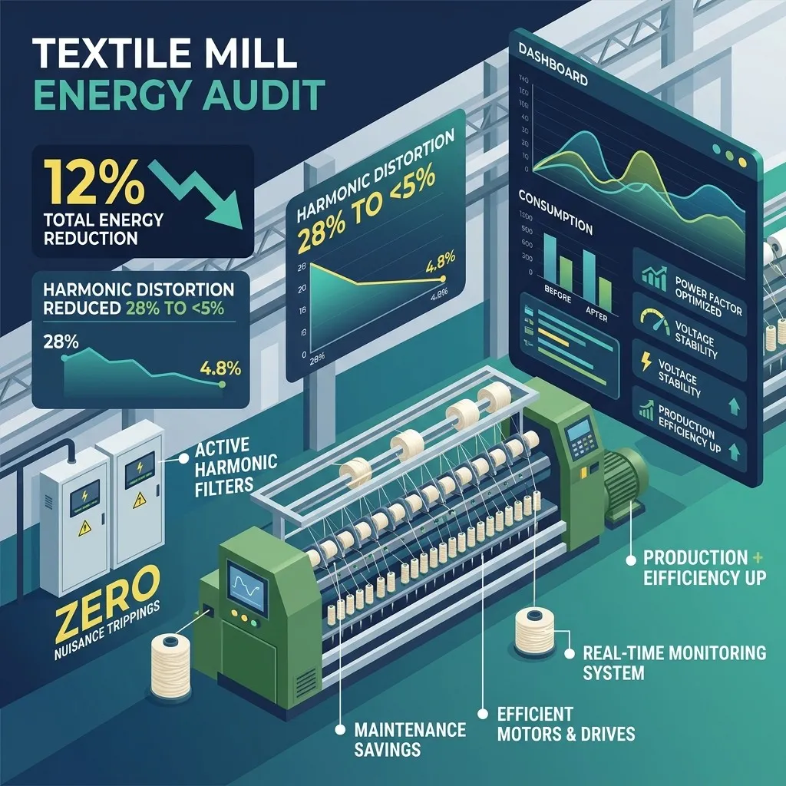

Executive Summary
A massive, 1 Lakh spindle-capacity yarn spinning mill located near Panipat faced a highly volatile electrical issue. Their hundreds of interconnected ring frames and automated cone winding machines—driven heavily by small individual Variable Frequency Drives (VFDs)—were constantly experiencing unexpected 'nuisance trips' during peak production hours. Simultaneously, their central chilled-water HVAC systems (required to maintain strict clean-room humidity for yarn tensile strength) were drawing unseasonable voltage loads. B2B Industrial Solutions executed a dual Energy & Power Quality Audit.
The Challenge: Disastrous Power Harmonics
In the textile sector, maintaining continuous 24/7 spinning momentum is the only way to generate margin. Stopping intermediate machines causes massive fabric breakage and thousands of meters of ruined spooled yarn.
Deploying The Engineering Solution
Our engineers rigged Fluke Power Quality analyzers directly into the sub-panels feeding the ring frames, and ultrasonic flow meters onto the main 600 TR chiller header pipes.
Key Findings Generated:
- The vast number of VFDs operating concurrently were injecting monumental levels of "dirty power." The Total Harmonic Distortion (THD-V and THD-I) was reading at an extremely volatile 28% and 55% respectively. This distortion was generating heavy transient voltage spikes, triggering the sensitive internal safety limits inside the ring frame PLCs, causing the localized nuisance trips.
- The central passive Capacitor Banks (APFC) were blowing fuses rapidly because they were absorbing those high harmonic currents via resonance. Consequently, the mill was registering a poor Power Factor (0.81) and enduring heavy state dis-com penalties.
- The chilled-water primary pumps were vastly oversized for the current load and operated via manual discharge valves throttled back by 40%.
Rectification & Identified Results
We instituted immediate hardware solutions via our turnkey projects division:
Active Harmonic Filtering
We designed, sized, and installed high-capacity Active Harmonic Filters (AHF) directly at the main incomers. The THD instantly plummeted to below 5% (complying strictly with IEEE-519 norms). The ringing voltage transients vanished, and nuisance tripping dropped to zero. Production uptime recovered instantly.
Chilled Water Pumping
Integrated VFDs onto the chiller primary pumps, using differential pressure sensors to automatically scale down motor RPM during lower-heat load cycles. Achieved a direct 31% reduction in water pumping kW.
The payback on the capital equipment installed achieved a blazing ROI of barely 11 months, fueled simultaneously by removing the state electricity board’s power factor penalties and recovering thousands of hours of lost production uptime.
Explore Similar Industrial Breakthroughs
Building Materials
Discover how we achieved 18% energy reduction in a 2.5 MTPA Cement Plant via thermal optimization.
View Cement Plant Case Study →Power Quality Analysis
Learn more about our harmonic analysis and power quality benchmarking services for industrial stability.
Explore Our Service →